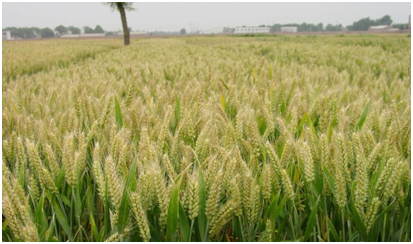
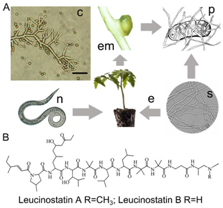
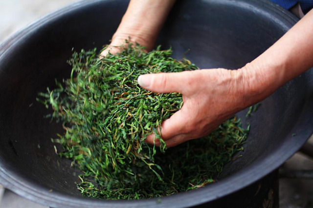
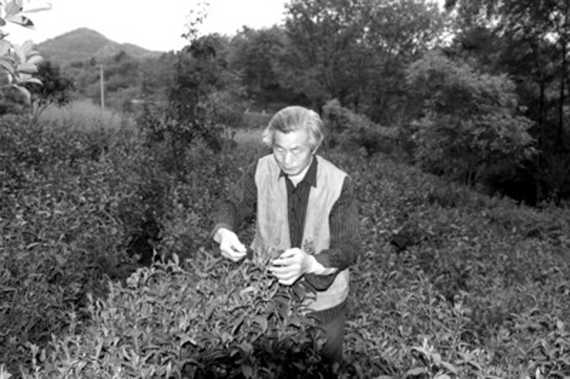

据悉，我国小麦育种可用亲本资源短缺和品种对白粉病与条锈病的抗性频繁丧失是制约我国小麦育种研究的两大关键问题，从1990年起，何中虎研究员带领科研团队系统开展了CIMMYT（国际玉米小麦改良中心）小麦引进、研究与创新利用， 历经15载，引进筛选出1.8万多份有一定利用价值的优异资源，占我国种质库中引进小麦56%；

作科所“CIMMYT小麦引进、研究与创新利用”获2015年度国家科学技术进步二等奖
2016.06.22 22:20


